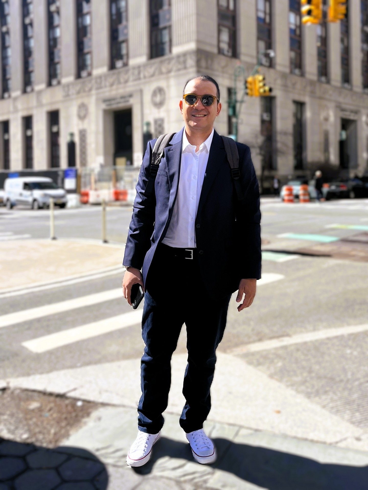

About me · New York City
Francisco
Villahermosa
Developer & automation consultant
I help people and businesses make better use of their time through technology.
Originally from Venezuela and now based in New York City, I specialize in Robotic Process Automation, Python development, process optimization, and AI integration.
My work starts with understanding how a business operates: the tasks people repeat, the systems they rely on, and the problems that slow them down. From there, I build practical solutions that make everyday work simpler and more reliable.

Connecting technology
with the way people work.
I’ve designed and developed automation solutions that streamline operations, connect applications, and reduce repetitive work across different business processes. My projects include end-to-end RPA workflows, bots integrated with APIs and databases, and dashboards that turn operational data into useful information.
I work with tools such as UiPath, Power Automate, Python, and SQL, choosing the approach that fits the process. Sometimes that means building a bot; other times, it means improving an existing workflow or connecting systems so information can move more smoothly.
For me, a successful solution should be easy to understand, well documented, and able to evolve as a business grows. I care about what happens after a project is delivered: how people use it, how it handles exceptions, and whether it continues to solve the right problem.
From understanding the process
to making it work better.
My experience brings together development, business analysis, and data. These are the areas I focus on when taking a project from an initial idea to a working solution.
- Scalable automation & RPA
- Designing dependable workflows and bots that can grow with operational needs.
- Business optimization & process mining
- Understanding how work flows and finding opportunities to simplify it.
- AI & API integration
- Connecting applications and adding AI where it supports a useful business outcome.
- Data analysis & visualization
- Turning information into dashboards and reports that support clearer decisions.
- Documentation & best practices
- Making solutions easier to maintain, support, and hand over to a team.
Tools I work with
- UiPath
- Python
- Power Automate
- Power Apps
- SQL
- Power BI
- Selenium
Let’s connect
Have a process or an idea
you’d like to improve?
I’m happy to talk about automation, development, or the challenges your team is working through. You can also explore my projects to see how I put these ideas into practice.